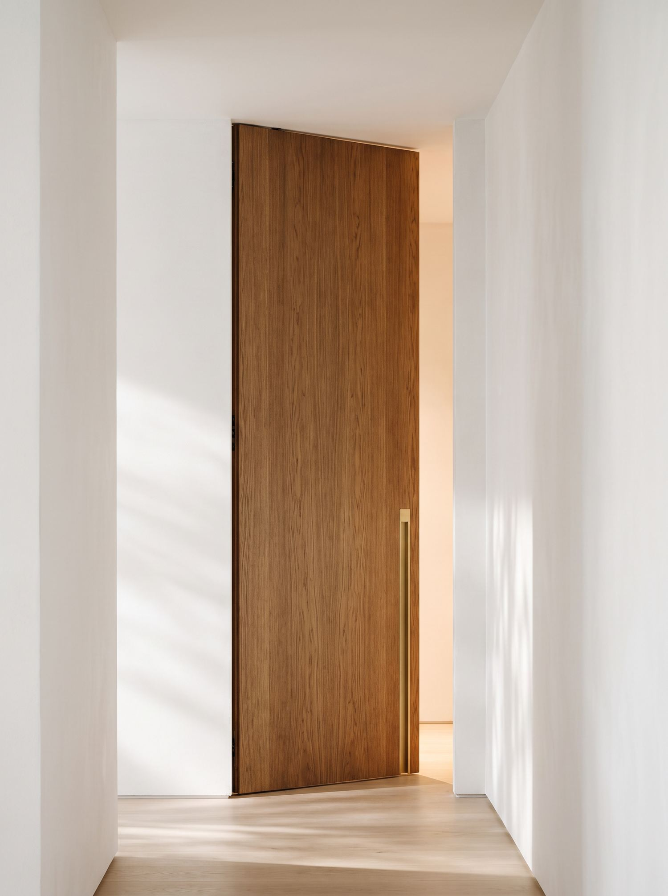
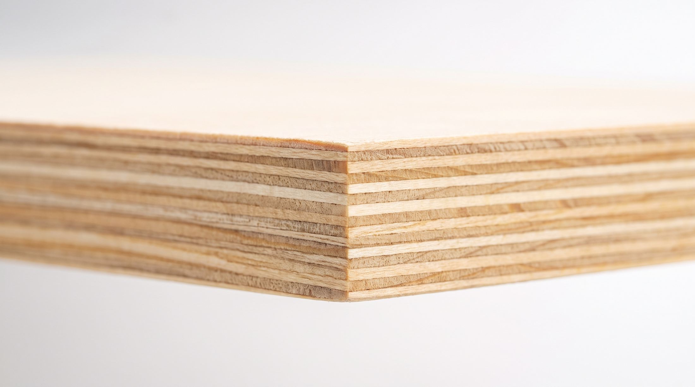
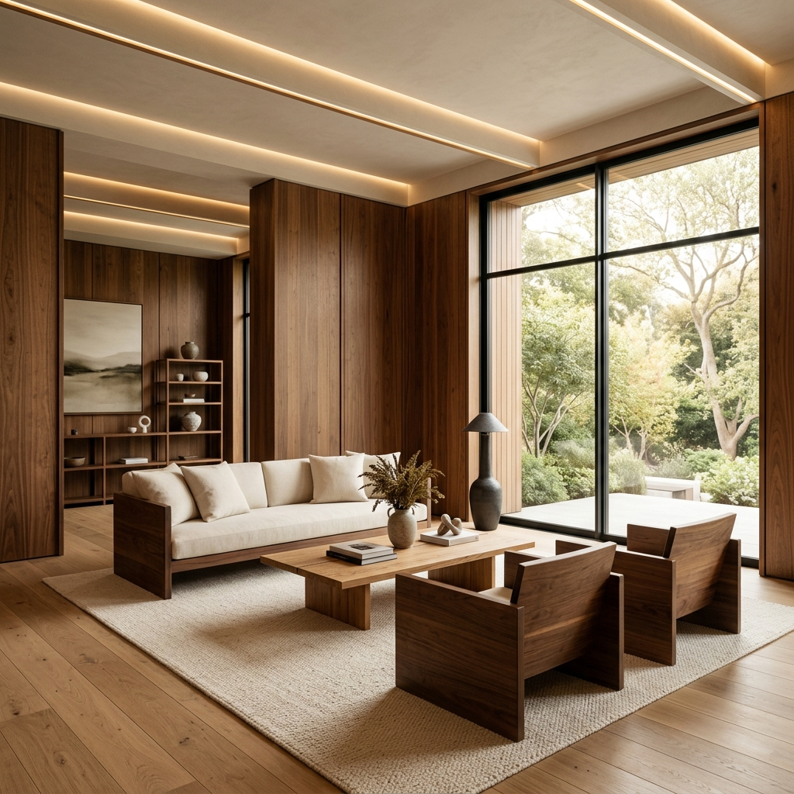
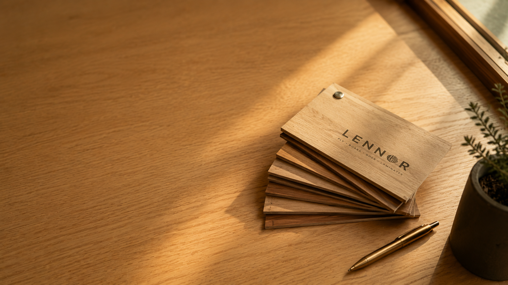

Pre-cut · Option 2 — "Ledger" · editorial rows, thumbnail on hover
Your cutting list, delivered as parts.
01→
Your cutting list
Doors, panels, shelving — the sizes you send us.

02→
Nested for zero waste
Parts tiled tightly across each full sheet — nothing wasted.

03→
Cut at the factory
Panel saw, not a site hand-saw. Square, clean, repeatable.
04→
Stacked & labelled
Each part tagged to your list and stacked in order.

05→
Delivered ready
Arrives as parts, not offcuts — straight to assembly.
